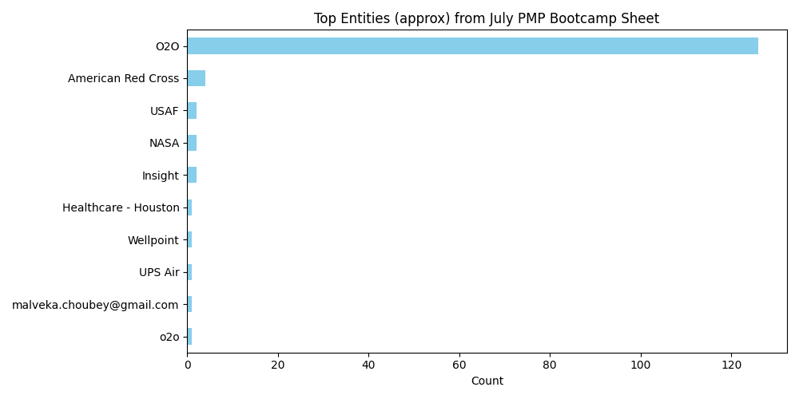

Modernising analytics for a global manufacturer to drive real-time decisions.
A global manufacturing client lacked a unified data platform. Siloed systems and delayed reporting hindered their ability to act on insights quickly. Ironclad built a modern data platform that integrated production, supply chain and quality data into a single source of truth.
By implementing scalable pipelines and real‑time dashboards, the organisation gained visibility into operations like never before. Decision‑makers can now monitor bottlenecks, forecast demand and respond to quality issues in hours instead of weeks.
The chart above illustrates how one segment dominated the data. Our platform empowered the manufacturer to re‑allocate resources, reducing downtime by 30% and improving product quality scores by 20% within six months.
Talk to us about building a scalable data platform tailored to your business.
Get in Touch